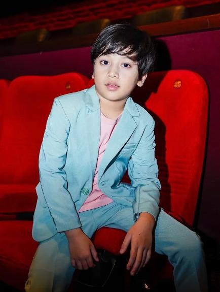

Adam Xavier
Energi Ceria, Semangat Baja Sehebat Transformers!
Adam Xavier lahir di Jakarta pada 15 Mei 2014. Sejak balita, Adam memiliki ketertarikan luar biasa terhadap figur robot, animasi sains fiksi, dan seni peran. Memulai langkah pertamanya di industri hiburan pada usia 7 tahun, kepribadian Adam yang santun, ekspresif, dan berjiwa petualang langsung memikat hati para sutradara serta penonton Indonesia.
Terinspirasi oleh karakter favoritnya, Bumblebee dan Optimus Prime, Adam selalu memegang teguh prinsip keberanian dan kerja keras. Di lokasi syuting film laga maupun drama anak, Adam dikenal sebagai aktor cilik yang penuh dedikasi, mampu melakukan adegan aksi dengan bimbingan pelatih, namun tetap ceria dan rajin belajar di sela waktu syuting.
Perjalanan Karier & Prestasi
Memulai karier sebagai model cilik untuk berbagai iklan komersial susu bernutrisi dan produk mainan mecha robotik. Kemampuan berekspresi secara alami membuatnya dilirik agensi akting.
Mendapatkan peran pertamanya dalam serial drama keluarga akhir pekan. Karakter anak bungsu yang cerdik dan humoris membuatnya mulai memiliki basis penggemar setia.
Berperan sebagai Reza, anak jenius pencipta jam robot dalam film "Detektif Cilik: Misteri Jam Robot". Penampilannya meraih nominasi dan memenangkan penghargaan Pemeran Cilik Terfavorit.
Membintangi dua karya besar sekaligus: film layar lebar "Satria Cilik & Mecha Titan" dan serial laga TV populer "Ksatria Surya" (Season 1 & 2). Pada tahun ini fanbase resmi AdamUnited resmi dideklarasikan.
Dipercaya menjadi pemeran utama Rafa dalam film layar lebar sci-fi berbiaya besar "Cyber Guardian: Anak Bintang", serta menjadi pengisi suara resmi dubber karakter anak robotik di serial animasi Transformers Indonesia.
Fakta Unik Seputar Adam Xavier
Ingin Melihat Karya Lengkap Adam?
Jelajahi seluruh film layar lebar, serial TV, dan jadwal acara meet & greet resmi bersama Adam Xavier.